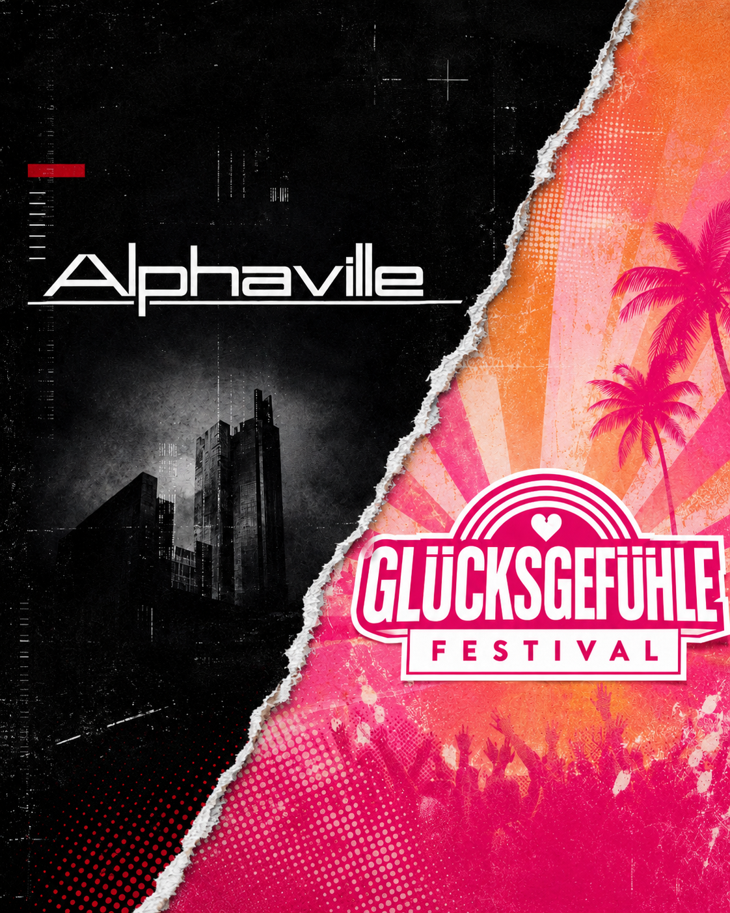

Kolumne
Good Vibes Only – aber für wen eigentlich?
Burg und seine Meinung.
Erst ausgeladen, dann wieder eingeladen. Alphaville kommen trotzdem nicht. Wer soll für die gute Laune beim Glücksgefühle Festival eigentlich still sein?
Aktualisiert am 04.09.2026. Mit Alphavilles endgültiger Entscheidung, den Reaktionen anderer Künstler und dem gemeinsamen Auftritt von Marian Gold und den Toten Hosen.
Kolumne anhören
Audio: KI-Version meiner eigenen Stimme · Text & Redaktion: Burg

Alphaville sollten am 4. September beim Glücksgefühle Festival auf dem Hockenheimring auftreten. Zwei Tage vorher machte die Band öffentlich, dass der Veranstalter das Konzert abgesagt hat. Streitpunkt: politische Äußerungen auf der Bühne. Alphavilles Stellungnahme
Zur Begründung erklärte das Festival, die Menschen sollten ihren Alltag vergessen und eine gute Zeit haben. Gesellschaftlich kontroverse Themen und politische Reden seien deshalb unerwünscht. Mit Alphaville habe man sich darüber nicht einigen können.
„Good Vibes Only.“
Klingt erstmal nett. Wird nur ziemlich beschissen, wenn dafür eine Band ausgeladen wird, die sich den Mund nicht nach den Stimmungsvorgaben des Veranstalters zurechtlegen lassen will.
Ich verstehe den Wunsch nach einem Wochenende ohne Weltuntergangsmeldungen. Auch ich brauche nicht zwischen zwei Songs das komplette Grundsatzprogramm des Sängers. Ein Lied darf davon handeln, dass jemand zu viel gesoffen oder seinen Schlüssel verloren hat. Vielleicht hängt beides zusammen. Muss die politische Bildung jetzt auch nicht retten.
Aber zwischen „Heute möchte ich einfach Musik hören“ und „Politische Äußerungen sind hier grundsätzlich unerwünscht“ liegt ein Unterschied. Den kann man nicht einfach mit Konfetti zuschütten.
Die Regel reicht mir schon
Nach Darstellung des Festivals hatten politische Äußerungen bei einem früheren Alphaville-Auftritt einige Gäste verärgert. Danach habe man die Band gebeten, darauf zu verzichten. Bei einem zweiten Auftritt sei das eingehalten worden. Vor dem Glücksgefühle Festival wurde die Forderung erneuert; diesmal kam keine Einigung zustande.
Marian Gold hatte sich laut SWR im Juli bei einem Auftritt in Hamburg gegen die AfD positioniert. Welche konkreten Ansagen die Beschwerden ausgelöst haben, geht aus den vorliegenden Stellungnahmen nicht hervor. Ich kenne weder die internen Gespräche noch die Verträge. Einen bestimmten Satz zum nachgewiesenen Auslöser zu erklären, wäre deshalb Quatsch. Bericht des SWR
Die öffentlich erklärte Regel reicht mir allerdings schon, um mich aufzuregen. Alphaville zitieren aus dem Absageschreiben, der Veranstalter dulde keine politischen Themen oder Äußerungen jeglicher Art auf seiner Bühne. Die Band empfindet das als Maulkorb und will weiter für Freiheit, Toleranz und Demokratie eintreten. Original auf der Bandwebsite
In seiner ersten Stellungnahme betonte der Veranstalter, es gehe nicht um Golds Haltung. Jeder dürfe seine Meinung haben. Man bestimme lediglich den Rahmen.
Für mich klingt das nach: Deine Meinung darfst du behalten. Hörbar werden soll sie hier bloß nicht.
Was mich daran ankotzt: Eine Wahlempfehlung und eine Ansage gegen Rassismus landen damit im selben Sack: politische Äußerung, unerwünscht, bitte draußen lassen. Hauptsache, niemand fühlt sich beim Feiern gestört. Dass der Widerspruch gegen Ausgrenzung anderen Menschen überhaupt erst das Gefühl geben könnte, willkommen zu sein, fällt dabei hinten runter.
Wenn ich „Fuck AfD“ sage, ist das selbstverständlich politisch. Es ist meine Haltung. Keine Alphaville-Ansage, die ich hier nachträglich erfinde. Und ich finde nicht, dass ich mich dafür entschuldigen muss, weil jemand seine gute Laune lieber ohne Widerspruch gegen diese Partei genießen möchte.
Es gibt keinen Anspruch darauf, bei einem Konzert ausschließlich Dinge zu hören, die einem passen. Auch ich muss aushalten, wenn ein Künstler etwas sagt, das ich danebenfinde. Dann widerspreche ich. Oder gehe. Dafür braucht es kein allgemeines Schweigegebot.
Wer soll still sein?
Mich interessiert deshalb irgendwann nicht mehr, ob alle glücklich sein sollen, sondern wessen Glücksgefühl hier eigentlich geschützt wird – und wer dafür die Fresse halten soll. Nehmen wir einen Gast, der im Alltag Rassismus erlebt und eine klare Ansage dagegen als Rückhalt empfindet. Soll der sich damit begnügen, dass seine Ausgrenzung leider ein kontroverses Thema ist? Zu unangenehm fürs Wochenende? Montag wieder, wenn keiner mehr tanzt?
Ich unterstelle damit keinem konkreten Beschwerdeführer Rassismus. Aber wer allein den Unmut einiger Gäste als Argument anführt, muss sich fragen lassen, warum deren Unbehagen schwerer wiegen soll als der Widerspruch von der Bühne.
Politische Realität lässt sich nicht an der Einlasskontrolle abgeben wie eine Bierflasche.
Wir schleppen unser Leben mit aufs Gelände. Die Sorgen verschwinden nicht, nur weil vorne jemand einen bekannten Refrain anstimmt. Gemeinsam Musik zu hören kann trotzdem helfen. Gerade weil da manchmal jemand ausspricht, was einen selbst beschäftigt. Das kann verbinden. Schweigen ist dafür keine Voraussetzung.
Wenn das Keyboard aufhört
Und dieses Gerede, die Bühne gehöre der Musik und nicht der Politik, macht es nicht besser. Bei Slime oder Ton Steine Scherben kann ich die Haltung nicht herausnehmen und behaupten, jetzt hätte ich endlich nur noch die Musik übrig. Da müsste ich schon sehr entschlossen weghören.
Alphaville sind keine Punkband. Müssen sie auch nicht sein. Gerade deshalb freue ich mich, wenn Haltung nicht nur dort hörbar wird, wo ohnehin alle zustimmend auf ihre Aufnäher zeigen. Warum sollte ausgerechnet eine Popband zwischen ihren Hits nichts zu sagen haben dürfen?
Wo soll diese Trennung überhaupt funktionieren? Darf eine Band gegen Krieg singen, aber zwischen den Liedern nicht erklären, welchen Krieg sie meint? Wird derselbe Gedanke erst dann unpassend, wenn das Keyboard aufhört?
Ein Verbot bestimmter Songs ist hier nicht belegt. Mich stört die Vorstellung dahinter: Musik darf uns offenbar bewegen, solange sich möglichst niemand vom Inhalt bewegt fühlt, eine Beschwerde zu schreiben. Das ist mir als Vorstellung von Kultur verdammt wenig.
Ausgerechnet die Hosen
Wie eine andere Antwort aussehen kann, haben die Toten Hosen am 2. September in Münster gezeigt. Campino kritisierte die Ausladung auf der Bühne deutlich. Anschließend sangen sie gemeinsam mit Alphaville-Sänger Marian Gold „Forever Young“. Während ein Festival Gold nicht auf seiner Bühne haben wollte, bekam er bei den Hosen ein Mikrofon. Bericht über die Ansage und den gemeinsamen Auftritt
Jetzt muss ich hier auch noch die Toten Hosen loben. Als wäre der Tag nicht schon anstrengend genug.
Wer mich kennt, kennt meinen liebevoll gepflegten Hass auf diese Kapelle. Der ist gespielt. Ich trete nach oben, nicht nach unten. Eine Band, die Stadien füllt, hält meinen Quatsch aus. Aber wenn die Hosen ihre große Bühne dafür nutzen, sich neben einen ausgeladenen Kollegen zu stellen, werde ich nicht aus Prinzip weitermeckern. Dann haben sie verdammt noch mal etwas richtig gemacht.
Das war für mich die erste Aktion seit Jahren, bei der ich vor den Toten Hosen meinen Hut ziehe. Ehrlich. Sie haben Marian Gold solidarisch beigestanden, statt ihn mit dem Ärger allein zu lassen. Ich mag sie trotzdem nicht. 😉
Die Entschuldigung gehört hier mit rein
Am 3. September erklärte Mitveranstalter Markus Krampe gegenüber BILD: „Wie wir gehandelt haben, war in der Tat ein Fehler. Das tut mir leid.“ Außerdem lud er Alphaville erneut ein, wie geplant beim Festival aufzutreten. Die Ausladung war also nicht mehr sein letztes Wort. BILD-Bericht vom 3. September, 14:37 Uhr
Am Abend des 3. September kam Alphavilles Antwort: Die Band nimmt die Entschuldigung und Wiedereinladung zur Kenntnis, wird aber nicht auftreten. Marian Gold begründete das mit der Atmosphäre, die die vorausgegangenen Äußerungen geschaffen hätten. Damit ist die Reihenfolge wichtig: Erst lud der Veranstalter die Band aus. Nach seiner Kehrtwende entschied sie selbst, nicht zurückzukommen. WDR über Alphavilles endgültige Entscheidung, 4. September
Gut, dass Krampe den Fehler einräumt. Das schreibe ich hier genauso hin wie meinen Ärger über die Ausladung. Ich kann nicht verlangen, dass jemand eine beschissene Entscheidung korrigiert, und anschließend so tun, als hätte ich davon nichts mitbekommen. Nur weil es mir gerade besser in den wütenden Text passen würde.
Alphaville müssen deshalb aber nicht sofort die Instrumente einpacken und dankbar zum Soundcheck erscheinen. Eine Entschuldigung verpflichtet die andere Seite nicht dazu, wieder mitzumachen. Dass sie unter diesen Umständen keine Lust mehr auf den Auftritt haben, kann ich ziemlich gut verstehen.
Die Entschuldigung macht die ursprüngliche Entscheidung allerdings nicht nachträglich richtig. Und ob damit auch die allgemeine Vorgabe gegen politische Bühnenäußerungen vom Tisch ist, lässt sich aus den berichteten Aussagen nicht eindeutig ablesen. Genau da bleibt für mich die Frage: Darf Haltung künftig hörbar sein, ohne dass erst ein öffentliches Theater daraus werden muss?
Absagen ist nicht die einzige Antwort
Beauty & the Beats hat seinen eigenen Festivalauftritt abgesagt. Nach seiner öffentlichen Erklärung will er nicht bei einer Veranstaltung spielen, die Künstler bei Aussagen für Demokratie und gegen Rechtsextremismus einschränkt. Felix Jaehn wählt den anderen Weg: auftreten und die Bühne bewusst für die eigene Haltung nutzen. Das ist eine angekündigte Reaktion, noch kein von mir überprüfter Bühnenmoment. DJ Mag über beide Reaktionen
Auch Culcha Candela kündigten laut Express an, ihre Ablehnung der AfD noch deutlicher hörbar zu machen. Die Donots stellten sich öffentlich hinter Alphaville. Peter Brings sagte dem Blatt, seine Band würde unter diesen Umständen nicht auftreten, wenn sie dieses Jahr gebucht wäre. Das ist eine klare Ansage, aber keine tatsächliche Absage: Brings stehen nicht im diesjährigen Programm. Express über Culcha Candela, Donots und Brings
Ich werde jetzt nicht vom Küchentisch aus die einzig gültige Form von Solidarität verordnen. Wer absagt, setzt eine Grenze. Wer hingeht und widerspricht, kann Menschen erreichen, die diesen Widerspruch sonst vielleicht nicht hören. Entscheidend ist für mich, was jemand tut. Ein Name auf dem Festivalplakat ist jedenfalls noch keine Unterschrift unter die Haltung des Veranstalters.
Neutral wird das nicht
Nein, das macht das Glücksgefühle Festival nicht automatisch zu einer rechten Veranstaltung. Auch den Diktaturvergleich aus Alphavilles Erklärung brauche ich dafür nicht. Ich kann diese Entscheidung feige und falsch finden, ohne dem Veranstalter eine Gesinnung anzudichten, die ich nicht belegen kann.
Wer politische Äußerungen von seiner Bühne fernhalten will, trifft selbst eine Entscheidung darüber, was dort Platz bekommt. Die wird nicht neutral, bloß weil sie auf einer pinken Grafik steht.
Mich ärgert weiterhin, wie vernünftig die ursprüngliche Absage klingen sollte. Man wolle doch bloß, dass alle glücklich sind. Klar. Nur war die Band damit draußen, während der Streit selbstverständlich blieb. Was für eine beschissene Lösung.
Ich gönne den Leuten ihr Festival. Niemand wird zum schlechten Menschen, weil er dort hinfährt. Aber meine Sympathie gehört in dieser Geschichte Alphaville. Dass sie nach der Absage nicht zurückrudern, sondern an ihrer Haltung festhalten, finde ich richtig.
Wer zu „Forever Young“ feiern kann, wird auch ein paar Sätze über Demokratie überleben.
Und wenn daran das Glücksgefühl zerbricht, war es vielleicht vorher schon verdammt dünn.
Quellen und Originalpositionen
- Alphaville: Stellungnahme auf Instagram · Offizielles Bandprofil
- Glücksgefühle Festival: Stellungnahme auf Instagram · Offizielles Festivalprofil
- Die Toten Hosen: eigener Rückblick auf Münster mit Marian Gold · WDR über den Gastauftritt und die Kritik an der Ausladung
- BILD: Krampes Entschuldigung und erneute Einladung · WDR: Alphaville lehnen den Auftritt dennoch ab
- DJ Mag: Beauty & the Beats und Felix Jaehn · Express: weitere Reaktionen aus der Musikszene
Instagram kann zum Lesen eine Anmeldung verlangen. Alphavilles Erklärung ist auch auf der Bandwebsite verfügbar; die Position des Festivals ist außerdem im SWR-Bericht nachzulesen.
Quellen und Stand: 04.09.2026. Grundlage sind die verlinkten Stellungnahmen, die vorliegenden Screenshots und die genannten Medienberichte. Krampes Entschuldigung und erneute Einladung sind bei BILD dokumentiert; Alphavilles anschließende Ablehnung meldet der WDR mit Stand vom 4. September, 10:39 Uhr. Der Hosen-Abschnitt stützt sich auf deren eigenen Konzertrückblick sowie WDR und Rolling Stone. Die weiteren Reaktionen sind bei DJ Mag und Express dokumentiert. Angekündigte Bühnenäußerungen werden hier nicht als bereits erfolgte Auftritte dargestellt. Die internen Absprachen und Verträge liegen uns nicht vor. Die Bewertungen im Text sind Burgs Meinung.
Gehört das zu eurer Bandphilosophie?
Die Frage geht an die Bands und Acts, die für das Glücksgefühle Festival 2026 angekündigt wurden: Alphaville wurden wegen des Streits um politische Bühnenäußerungen ausgeladen und lehnten nach Krampes Entschuldigung die erneute Einladung ab. Einige Künstler haben bereits Position bezogen, wie oben beschrieben. Passt die ursprünglich erklärte Vorgabe zu eurem Selbstverständnis? Und welchen Platz soll politische Haltung auf euren Bühnen haben?
Dass ihr im Line-up steht, heißt nicht automatisch, dass ihr diese Entscheidung unterstützt. Eure Verträge und Gespräche kenne ich nicht. Gerade deshalb frage ich.
Line-up-Stand: 03.09.2026. Die offizielle Line-up-Seite für 2026 nennt neben Alphaville 49 weitere Acts auf den drei großen Bühnen; mit dem unten aufgeführten Technobus sind hier 67 weitere benannte Acts erfasst. Gemeint ist die Ausgabe vom 3. bis 6. September 2026 am Hockenheimring. Alphavilles Profil ist bereits oben verlinkt und hier nicht erneut mitgezählt. Zu ihrer Ausladung und erneuten Einladung gilt der oben dokumentierte Stand. Die Liste dokumentiert die Ankündigung, nicht tatsächlich absolvierte Auftritte oder politische Positionen. Kurzfristige Änderungen sind möglich.
Euphoria Stage
- David Guetta @davidguetta
- Ayliva @ayliva
- Mark Forster @markforsterofficial
- Marteria @marteria
- Scooter @scooterofficial
- Jazeek @jazeek99
- Blue @officialblue
- Leony @leony.music
- Loi @loi.music
- Mark Medlock @mark_medlock_official
- Max Giesinger @maxgiesinger
- Montez @montez.official
- Tom Gregory @tomgregory
- Zartmann @zartmann
Cloud 9 Stage
- Boris Brejcha @borisbrejcha
- BUNT. @buntmusic
- Dimitri Vegas & Like Mike @dimitrivegasandlikemike
- Hardwell @hardwell
- Lost Frequencies @lostfrequencies
- KSHMR @kshmr
- Timmy Trumpet @timmytrumpet
- W&W @wandwmusic
- Brennan Heart @djbrennanheart
- David Puentez @davidpuentez
- Ely Oaks @elyoaks
- FAST BOY @fastboymusic
- Felix Jaehn @felixjaehn
- Neelix @neelixmusic
- NERVO @nervomusic
- Noel Holler @noel_holler
Dopamin Stage
- SDP @sdp_die_band
- Ski Aggu @wer.ist.aggu
- Andreas Gabalier @andreasgabalier_official
- No Angels @noangelsofficial
- Mia Julia @mia_julia
- HBz @hbzmusic
- 01099 @01099official
- Bausa @bausashaus
- Culcha Candela @culchacandela
- Grüngürtelrosen @diegruenguertelrosen
- Julian Sommer @juliansommer
- MilleniumKid @milleniumkid.music
- Nura @nura
- Alexander Marcus @alexandermarcusofficial
- Alle Farben @allefarben_official
- Pietro Lombardi @pietrolombardi
- Jebroer @jebroer
- Malle Anja @malleanja_official
- KnollDoll @knolldoll
Technobus
Zusätzlich zu den drei großen Bühnen nennt der offizielle Zeitplan 2026 (PDF) diese 18 Acts. Zwei weitere Slots sind lediglich als „Secret Act“ angekündigt. Für QRIS konnte ich kein eindeutig zugeordnetes Instagram-Profil bestätigen; dieser Eintrag bleibt deshalb vorerst ohne Link.
- NightofTech @nightoftech
- Caro van Ee @carovanee
- QRIS Instagram-Profil noch nicht eindeutig zugeordnet
- Pappenheimer @pappenheimer.official
- CHROOVE @chroove.mp3
- Jetset Jourdain @jetsetjourdain
- ISEK @isek___
- Chany Dakota @chanydakota
- BOVSKI @bovski_official
- ANVEE @anvee_music
- KXXMA @kxxma_official
- Max Bering @max_bering
- Peter Pahn @peterpahn__
- Jason Wats @jasonwats.ofc
- Matthias Olck @matthiasolck
- Ava Crown @avacrown_
- Drumcomplex @drumcomplex
- Nick Schwenderling @nick_schwenderling